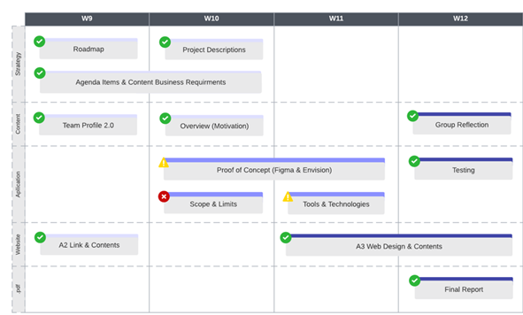
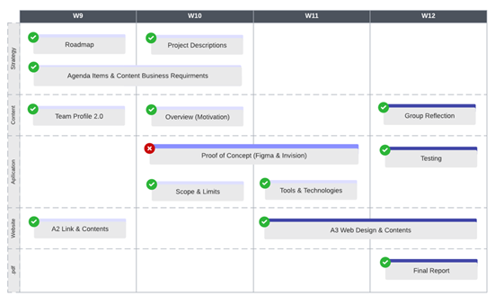
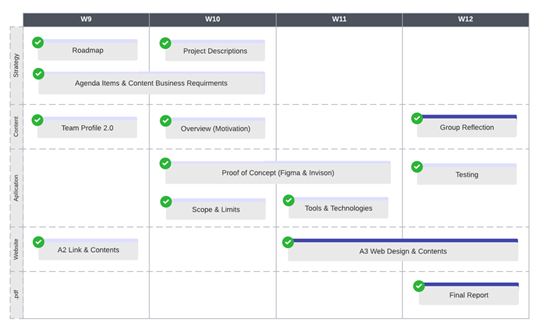

Plans & Progress
Week 1-4
The story of Kaleid AI began at the beginning of semester 1 when individual students were required to explore the information technology industry for assignment 1 (A1) and although the marking rubric guided students toward successful learning outcomes this journey was very much a self-learning exercise. Each member had to complete a personal profile addressing their interest and experience in information technology and analyse their own personality and learning style by partaking in the Myer-Briggs 16 Personality Test and another two personality tests of their choosing. Harnessing this newfound information students wrote a business justification on a piece of technology that they believed could possibly plug a hole in an industry or area that was lacking productivity or innovation.
A1 – Individual Project Ideas
Listed below are the A1 project ideas for each team member.
Mark Schroeder – Automatic Picture Printer: A novelty button that randomly prints images sourced on the internet via Application Programming Interfaces (API).
Jack Gale – Cram Lock: A locking application that disables other applications nominated by the user until they have consumed enough time on other nominated applications.
Dominic Hutchinson – Reflections: A data visualisation application that displays journal entries as stars in the nigt- sky and links other entries together creating constellations.
Yousef Fares – Unity Board Game App: A board game social media application that encourages conversation during game play.
Gabriel Jones – Last Hitting: A first person shooting aim training program that progressively improves performance for multiplayer online battle arena (MOBA) video games.
Emre Altunsu – Multi-Management App: A multi-managing customisable health application that reports biometrics viewable via an accessible interface allowing users to self-evaluate health conditions at will.
Week 5-8
A2 – Group Project Collaboration
Kaleid AI was formed during the early stages of assignment 2 (A2) when students were required to form a group and collaborate drawing inspiration from their A1 project ideas. After careful evaluation Dom’s application ‘Reflections’ was favoured among the group with plans to evolve the original concept during A2’s research developments. During the applications infancy the principle of Reflections was to make data beautiful by encouraging users to reflect on their thoughts and actions taking control of their life through active learning journal entries. Each journal entry is represented as a star in the night-sky, with multiple journal entries linking stars together creating a constellation. The group preferred Dom’s idea due to its convincing motivation and collective belief that this application could be built with our current and progressing skills. Many of us, with the exception to Yousef, had very little knowledge and confidence with programming languages but considering Reflections core structure is a data entry application then the biggest challenge would be representing the data visually. As a group we introduced other concepts to evolve the application, this included automated sharing, augmented reality and a data search engine.
- The automated sharing feature would collate the days/weeks/months/years journal entry into an interactive constellation that could be shared to private and public social media feeds.
- To enhance interaction the data visualiser could be created through the lens of a camera displaying constellations on the mobile devices viewport. We decided to focus on augmented reality rather than virtual reality due to accessibility limitations, every user has a phone in their pocket and not a VR headset.
- The search engine is the most ambitious concept, after years of collecting personal data with natural language processing Reflections could store key words that evaluate emotion and thought. The search engine could then search for private and public data correlations by entering keyword parameters and display the data as constellations in the night-sky.
- Private – What was my mood during winter on Mondays?
- Public - What was the mood for Ukrainians after the Russian invasion?
Team name
By promoting the beauty of data visualisation the group was inspired to establish a team name that replicated the vision of Reflections. With the help of artificial intelligence our ethos is to uncover unidentifiable patterns not visible to users and capture that in an aesthetic that is both appropriate and appealing. We believe that a kaleidoscope best symbolises what we are trying to achieve by styling patterns of data. The group came to a unanimous decision, this Kaleid AI was born.
A2 Team Comments
Schroeder – “Our team gets along very well which means we are able to easily converse with one another in team meetings. The outlook for Kaleid AI is looking strong as we now work towards creating a functional prototype of Reflections as a team-oriented group.”
Jack Gale – “I was very impressed with the group, each member expressed high-level communication. The discussion and analysis felt like collaborating with subject-matter experts.”
Dominic Hutchinson – “When the group selected my original project idea it was very rewarding. Watching the application grow from the input of the team was an eye-opening experience.”
Yousef Fares – “I was surprised how easy the team responded to constructive criticism creating an idea sharing safe space.”
Gabriel Jones – “Incorporating different features from one another allowed the project to grow naturally. Altering ideas throughout the team proved to me and the team that change is okay and should be embraced.”
Emre Altunsu – “The Kalied AI team demonstrated that they were not only able to effectively collaborate on project components, but also actively bounce feedback or express doubts between each other.”
Week 9
Kaleid AI effectively on annual leave between week 9 and 10. The group worked through the Easter break during the final stages of A2 thus earning a well-deserved week off. Each member will return and invigorated to tackle A3 head on.
Meeting 1
Toward the end of Week 9 Kaleid AI decided to have their first meeting on A3 concerned about timings and deliverables which brought their annual leave to an abrupt halt. Although the bulk of the motivation and business requirements were gathered in A2 the group felt lost without a proper plan or strategy in place. Another major concern was questioning whether developing the Reflections application was feasible within the teams current skillset.
Before addressing A3 the team held a retrospective to create a collective understanding and to agree upon the A2 feedback.
It has been noted between the team that documentation and recording could improve for A3, with inconsistent referencing and undocumented github trails highlighting the problem area. Agenda items weren’t noted until time of meeting slowing down the collaboration process, team often forgot discussing items and some requirements slipped through the gaps. Although agenda items weren’t documented before meetings the team highlight was that we were adaptable and able to collaborate during many settings. We believe this to be the result of a healthy mix of introverted and extroverted characters, each challenging each other when discussing ideas. The team profile analysis uncovered that our biggest team weakness was our time-management skills, but this ended up being one of our most successful strengths for A2, possibly due to our soft timeline in effect and team members delegating work inline with their IT passion.
Action Items
Without a strategy or plan in place the team decided to start completing the business requirements that were achievable immediately. The primary focus was on writing and building a strategy to execute A3 as efficiently as possible.
Week 10
A3 – Group Project Artifacts
To gain clarity each member was to carefully read the A3 criteria and rubric and raise any questions and concerns ahead of A3.
Meeting 2
At the beginning of week 10 Kaled AI implemented the Agile Sailboat Retrospective to help identify goals, traction, risks, and constraints.
The main goal of Kaleid AI is to build working software, regardless of brand design and next phase features. Our aim is to keep the application simple for users to journal at least one entry with the possibility of representing the data with an image or animation.
Other objectives shared by the group is to support our project journey with our individual career plan, more specifically to align career experience with our project responsibilities. This means software engineers will be exposed to coding objectives, managers will implement a clear strategy and analysts will problem-solve and mediate between the team.
The biggest concern and constraint is to deliver working software when the team lacks application programming experience. Although we have simplified the business requirement to a minimal journal entry function the team remains apprehensive about the core deliverable. Our plan B is to build wireframes demonstrating design and create a prototype that possesses future state features encase we are unable to deliver our main goal.
During a brainstorming session the group took on roles as software project planners to add requirements to each component they believe would aid them in the project cycle and marking rubric. These requirements were placed on the meeting agenda for heightened visibility and to act as a reference during development.
Without a specific roadmap or plan in place the group continues to accomplish what they can. In this case the in-depth motivation writing material and position descriptions to further develop out application are a priority. The group is hoping to complete all writing with two weeks remaining until deployment to develop and test their working software.
Meeting 3
With more time to strategise the group agreed to list all requirements for each component in the agenda, this can be used as a status report, checklist, rubric visibility and idea sharing platform. The group members can own each process by putting their name to each item and referring to the items business requirements to help their research and development. This process has reduced time constraints by minimising unfiltered discussion and increased development speed due the checklist assembly line approach.
Week 11
The group has made excellent progress with the written material, the most important phase of the project is now under investigation. The purpose of meeting 4 was to plan the steps to deliver our aim “working software”.
Meeting 4
Although Kaleid AI have taken a conservative approach to deliver simple software that is “working”, the group encountered internal conflict on how to achieve this task. This was due to all members failing to agree on the application development plan. After two weeks investigating the appropriate avenue it was difficult for the team to communicate their findings when they had little confidence and programming experience. The team juggled between three options.
- Continue developing the Figma prototype from A2
- Begin a new prototype on the Invision platform
- Start trying to blind code the application with the current skills immediately
The team were able to form a compromise between the three options and build a 6 step plan.
- Finalise Figma prototype (low fidelity)
- Interview users demonstrating the built-in capabilities on Figma.
- Transfer prototype requirements to the Invision prototype platform
- Create Invision prototype (high fidelity)
- Conduct user acceptance testing.
- Begin planning and developing working application.
Assignment 2 Assessment Review
Collaboration
- Did not review each other’s work – all team members to review each other’s work.
Website
- Inconsistent styling between style sheet and inline – Come to and agreement to use either style sheet or inline.
- Few minor bugs – polish all bugs before submission.
- Experiment with larger font and different font stylings.
Report
- Formatting was bulky – use paragraphing and subheaders.
Group Reflection
- Team failed to produce group reflection – Group reflection must be submitted by A3 deadline.
Consultation
To achieve our goal of delivering working software Kaleid AI met with subject-matter expert Anthony Clapp for mentoring advise on how to achieve our project objective. Anthony has set high expectations for the team and has suggested we push ourselves if we are to reach our potential.
Anthony reinforced the teams application development strategy by agreeing to our 6 step plan providing we document the research and development.
- Finalise Figma prototype (low fidelity)
- Interview users demonstrating the built-in capabilities on Figma.
- Transfer prototype requirements to the Invision prototype platform
- Create Invision prototype (high fidelity)
- Conduct user acceptance testing.
- Begin planning and developing working application.
Questions to consider for the low and high fidelity prototype:
- Which platform are we utilising?
- What are the Benefits?
- What are the limitations?
- What are the test cases?
- Successful outcomes
- Failed outcomes
- User feedback?
- Start coding with Swift/AWS
- Provide wireframes
- Database structure
- What are other supporting pieces of technology that we could build
Meeting 5
With less than 2 weeks left to finalise the project before the deadline the team continues to prioritise their working software objective. The team has split into groups representing the final three components remaining on assignment 3
- Strategy & Delivery: Jack & Dom
- Working Software: Emre & Yousef
- Website Design: Mark & Gabe
Furthermore, toward the final stages of Week 12 the team has decided to handover each other’s work to one another while they each compare their developments against the marking rubric.
RoadMap
Week 12
Meeting 6
Scope creep seems more obvious now within the final week of submission. The group has revisited previous conflict on how to deliver working software with respect to the teams capabilities. Currently we have done all we can do with Figma inside its low fidelity design, but we have managed to interview external parties with the applications design and hear their feedback.
The next phase was to transfer what we have built onto a feature-friendly platform called Invision, but the platform has too many dependencies for users to access. We are now at a roadblock trying to figure out what else we can do on Figma or explore any other platforms out there that may suit our introductory programming abilities.
Roadmap
Meeting 7
Last meeting the team felt a moment of dread, the design collaboration app Invison was proving to be a difficult task to expand the applications features. Any new platform requires slow digestive learning to understand the mechanics, and this wasn’t ideal with the given timeframe. The team began exploring other avenues or potentially may have had to try and stretch the limitations of Figma.
Fortunately, at stand-up the development team delivered the expanded business requirements on Invision. This was achieved by two core members putting together a working group to share what they had learned from the platform. It was in this moment of dialogue that they were able to gain clarity and accomplish the teams aim of delivering working software. The pillars of Agile Software Development are becoming more and more clear to the team.
Less than 4 days left until submission the team are now reviewing each others work to polish all content developed by the team. A retrospective will be held during the last meeting a day before submission to help the group reflect as a team.
RoadMap
